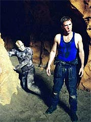
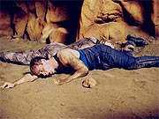

|
MANCHETE
DO EPISDIO
Segmento
mais uma vez aposta em
isolamento de Trip Tucker
Episdio
anterior | Prximo
episdio
Sinopse:
Trip est testando o novo sistema de piloto automtico do shuttlepod em torno de um planeta gigante com nada menos que 62 luas -- um excelente teste para o novo equipamento. Mas o tour tem um fim abrupto quando a nave atacada por um outro veculo aliengena. O shuttlepod acaba se aproximando de uma das luas e os sistemas da nave sofrem uma falha geral. Trip obrigado a fazer um pouso de emergncia.
Enquanto isso, na Enterprise, Malcolm est monitorando o progresso de Trip. Assim que eles perdem contato com o engenheiro, Malcolm relata que detectou troca de tiros entre duas naves, que agora sumiram dos sensores. Archer decide organizar uma busca sistemtica das 62 luas para procurar Trip, mas os planos so interrompidos quando a Enterprise contatada por uma nave aliengena. Segundo T'Pol, so Arkonianos, uma raa voltil e violenta que os Vulcanos encontraram h um sculo, mas com que foram incapazes de estabelecer relaes diplomticas.
O capito Arkoniano, Khata'n Zshaar, ordena que a Enterprise deixe o sistema imediatamente. Archer informa que est procura de um oficial perdido, aps uma confrontao com uma nave auxiliar Arkoniana. Ao descobrir que o oficial Arkoniano que atacou Trip tambm est perdido, Archer consegue convencer Zshaar a trabalhar em conjunto com a Enterprise para procur-los.
 Na superfcie da lua, Trip inicia as tentativas de reparos no trasceptor do shuttlepod, a fim de restabelecer contato com a Enterprise. A temperatura bem fria, mas tolervel. Entretanto, a paz logo iria abandon-lo, quando o oficial Arkoniano acidentado faz um ataque-surpresa ao engenheiro. Trip no sai ferido, mas o aliengena rouba seu transceptor.
Na tentativa de recuper-lo, Trip vai at onde o Arkoniano est acampando e prepara uma distrao, a fim de poder recuperar o equipamento. Mas o engenheiro no consegue trabalhar em tempo, o que o obriga a confrontar o aliengena num combate corpo-a-corpo. Ele acaba rendido pelo Arkoniano, que coloca Trip para trabalhar forosamente no conserto do transceptor.
Depois de algum trabalho, os dois conseguem estabelecer uma certa comunicao. Trip aprende o nome do aliengena, Zho'Kaan. Mas, determinado a escapar, o engenheiro consegue mais uma vez entrar em combate com ele, desta vez vencendo-o. Ele leva o prisioneiro para perto de seu shuttlepod, onde comea a trabalhar com seu transceptor e uma fonte de energia retirada da nave Arkoniana. Trip acredita que as duas peas podem funcionar corretamente, se acopladas.
A tentativa tem sucesso e o transceptor volta a operar. Trip tenta mandar uma mensagem para a Enterprise, mas a interferncia causada pelos minerais da lua (os mesmos que causaram a falha geral dos sistemas do shuttlepod pouco antes do pouso forado) impede a transmisso limpa do sinal. Trip decide que precisa levar o transceptor at o alto de uma montanha, onde a interferncia ser menor. Para levar o equipamento, ele precisa da ajuda de Zho'Kaan. E os dois precisam trabalhar rpido -- est para amanhecer e a temperatura comea a ficar quente demais para que os dois sobrevivam (na Enterprise, T'Pol constata que ela pode chegar at a 170 graus Celsius durante o dia).
Aps alguma briga, os dois finalmente se acertam e colaboram para levar o transceptor para um lugar mais alto. L eles tentam novamente mandar uma mensagem, que acaba sendo respondida pela Enterprise. Zho'Kaan j est quase morrendo desidratado, e Trip informa ao capito que o shuttlepod no ir funcionar para resgat-lo, em razo dos minrios na superfcie. Archer diz que vai traz-los via teletransporte, mas Phlox adverte que Zho'Kaan no sobreviveria ao processo, dada sua condio mdica delicada.
Archer diz que vai trazer Trip a bordo e depois resolver o problema do Arkoniano, mas o engenheiro se recusa. Ele sugere que as naves como a de Zho'Kaan podem ser modificadas de forma a serem protegidas da interferncia causada pela composio mineral da lua. Graas sugesto de Trip, os Arkonianos conseguem enviar uma nave de resgate e levar os dois a bordo da Enterprise.
L, Archer informa ao capito Arkoniano o estado dos sobreviventes e concorda em deixar o sistema imediatamente, como combinado. Embora ele esteja insatisfeito com o primeiro contato com esses aliengenas, T'Pol aponta que ele conseguiu estabelecer melhores relaes com eles em um dia do que os Vulcanos em um sculo. E, na enfermaria, Zho'Kaan diz a Trip que est feliz por no ter conseguido destruir o shuttlepod no primeiro ataque.
Comentrios:
"Dawn" mais uma clara tentativa de dar destaque a Trip. Isso no seria nenhum problema, no fosse essa a mesma premissa que movimentou
"Precious Cargo", dois
episdios atrs. Felizmente, pelo menos esta segunda tentativa mais bem-sucedida.
Mais uma vez, a originalidade passou longe. O tema de "dois inimigos isolados que precisam trabalhar juntos para sobreviver" provavelmente uma das coisas mais repetidas na histria da indstria do entretenimento. Antes mesmo de o episdio ser exibido, vrios fs apontavam as similaridades com filmes como "Inimigo Meu" ou mesmo com o episdio
"The Enemy", de A Nova Gerao. Mas o fato que, quando o enfoque o personagem, no a histria, pouco importa que esta seja repetitiva. O importante o personagem ter algo a acrescentar ao enredo batido -- da o sucesso moderado de
"Dawn".
Connor Trinneer consegue imprimir a Trip carisma suficiente para levar at mesmo o menos original dos episdios. E desta vez, ao contrrio do que aconteceu em
"Precious Cargo", Gregg Henry oferece mais como companheiro de cena, permitindo alguma qumica emergir da relao forada entre Trip e Zho'Kaan.
 As cenas que mostram os dois se confrontando e, posteriormente, se entendendo no planeta so razoavelmente bem-executadas. Mesmo que acabem no adicionando nada aos personagens, a audincia no sofre ou se cansa de ver a ao se desenrolando no planeta. O dilogo, muitas vezes numa situao em que um no entende o que o outro fala, bastante efetivo, e at as cenas de combate corporal parecem ter sido mais bem ensaiadas e executadas do que de costume -- provavelmente um dos vrios traos da competncia de Roxann Dawson na direo deixados ao longo do episdio.
Do ponto de vista da consistncia da histria que permeia essa aventura solo de Trip, podemos dizer que ela mais furada que um queijo suo. Para comear, no faz sentido que Trip esteja sozinho testando o shuttlepod -- no mnimo duas pessoas, uma para pilotar a nave em caso de emergncia, e outra para monitorar o novo sistema, seriam necessrias. Tambm um absurdo que a Enterprise no estivesse monitorando com extremo cuidado as manobras do shuttlepod em seu vo experimental -- o que certamente daria a localizao exata do pouso forado de Trip logo depois que acontecesse (acabando com o episdio).
Tambm esquisito que o shuttlepod no esteja equipado com um tradutor universal porttil no caso de emergncias, o que teria poupado todo o esforo de Trip para entender o Arkoniano e sua lngua (e, mais uma vez, teria acabado com o episdio). Imaginar que Trip saberia descrever melhor como alterar a nave Arkoniana de modo a torn-la imune aos efeitos dos minrios do planeta do que como modificar seu prprio shuttlepod parece bastante falso. E Archer deixar Trip l tostando s porque ele no quer abandonar seu amiguinho Arkoniano parece uma bobagem sem fim. E Trip fazer aquele discurso final, como se estivesse beira da morte, sabendo que seria resgatado em breve tambm no faz muito sentido. Um ponto negativo tambm vai para a "falsa encrenca" com o uso do teletransporte. Enfim, no faltam problemas no roteiro concebido por John Shiban.
Claro, ele tem seus pontos altos. bastante interessante (e comea a responder, de forma sutil, com a Terra vai se tornar uma potncia em breve) a noo de que Archer conseguiu melhor desempenho diplomtico com os Arkonianos do que os Vulcanos -- traz o conceito de que os Vulcanos sozinhos nunca conseguiriam arregimentar algo do tamanho e do escopo da Federao.
E todas as trocas entre Trip e Zho'Kaan parecem bastante realistas, uma vez que voc aceita os furos inerentes histria. Vale ressaltar que Gregg Henry conseguiu mais que ser um parceiro altura de Trinneer e seu Trip; o ator convidado trouxe uma atuao e um comportamento bastante aliengenas a seu personagem -- o que muito raro nos em geral extremamente antropomrficos aliengenas de
Jornada nas Estrelas. O gesto de "afirmativo" com a cabea, por exemplo, ajuda um bocado a criar essa noo "aliengena", assim como a dificuldade em pronunciar o nome de Trip e as palavras em ingls.
A maquiagem inspirada tambm ajuda a criar o aspecto aliengena dos Arkonianos. No exatamente revolucionria, mas melhor do que a mdia dos aliengenas da semana. E a introduo do "cuspe curativo" tambm extremamente efetiva para adicionar diferenas interessantes ao rol dos Arkonianos.
Em compensao, o tratamento dado ao cenrio deixou a desejar. Faz muito tempo que no vamos o "Planet Hell" to mal-tratado e to pouco convincente. Aquelas rochas de papel mach no ajudam muito a criar o ambiente de lua escaldante, nem mesmo com as espetaculares tomadas panormicas geradas por computador com o nascer dos trs (ou quatro?) sis do sistema.
Numa nota interessante, vale a pena dizer que o roteirista John Shiban aposta no isolamento como forma de desenvolver os personagens. Em seu primeiro roteiro,
"Minefield", ele isola Archer e Malcolm no casco da Enterprise; agora ele isola Trip em uma lua, com um aliengena agressivo. Talvez seja preciso inform-lo de que desenvolvimento de personagens exige mais do que simplesmente escrever 40 minutos de roteiro para ele, tirando os demais da trama. Porque exatamente isso que ele faz aqui.
O objetivo inicial no atingido: no aprendemos uma vrgula a mais de Trip com seu isolamento -- o mesmo velho e bom engenheiro do Sul que j conhecamos. A sorte de Shiban que Trinneer extremamente talentoso, e que seu roteiro, apesar de raso no trabalho com os personagens, divertido o suficiente para no entediar o telespectador.
Citaes:
Archer - "Well scan every moon -- even it we have to do it with binoculars!"
("Vamos rastrear cada lua -- mesmo que tenhamos de fazer com binculos!")
Tucker - "If you can understand anything I am saying to you, I want you to listen very carefully. Mary had a little lamb, its fleece was white as snow..."
("Se voc pode entender algo do que estou dizendo, eu quero que preste muita ateno. Mary tinha um carneirinho, sua l era branca como a neve...")
Tucker - "I cant fix this. Its a lost cause. Maybe if you vomit on it itll fix itself!"
("No posso consertar isso. uma causa perdida. Talvez se voc vomitar nele, ele se conserte sozinho!")
TPol - "You have managed to establish better relations in a day than the Vulcans have in a century."
("Voc conseguiu estabelecer melhores relaes num dia do que os Vulcanos o fizeram num sculo.")
Trivia:
 As filmagens comearam no dia 4 de novembro de 2002 e duraram sete dias. A maioria das cenas foi filmada nos cenrios representando a superfcie da lua.
As filmagens comearam no dia 4 de novembro de 2002 e duraram sete dias. A maioria das cenas foi filmada nos cenrios representando a superfcie da lua.
Zho'Kaan se chamava Sha'Khana numa das primeiras verses do roteiro.
Gregg Henry j havia interpretado Gallatin, em "Jornada nas Estrelas: Insurreio". Brad Greenquist interpretou Demmas em
"Warlord" (Voyager) e Krit em "Who Mourns for Morn?"
(Deep Space Nine).
Ficha
tcnica:
Escrito por John Shiban
Direo de Roxann Dawson
Exibido em 08/01/2003
Produo:
039
Elenco:
Scott
Bakula como Jonathan Archer
Jolene Blalock como
T'Pol
John Billingsley
como Phlox
Anthony Montgomery
como Travis Mayweather
Connor Trinneer como
Charlie 'Trip' Tucker III
Dominic Keating como
Malcolm Reed
Linda Park como Hoshi Sato
Elenco convidado:
Gregg Henry como Zho'Kaan
Brad Greenquist como Khata'n Zshaar
Episdio
anterior | Prximo
episdio
|